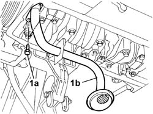

1084B28 engine oil intake duct - r + r with crankcase sump removed
- Path
- Procedures > 10 ENGINE > 1084 ENGINE LUBRICATION > 1084B ENGINE OIL LUBRICATION CIRCUIT > 1084B28 engine oil intake duct - r + r with crankcase sump removed
- Kind
- repair procedure (removal / refitting; the operation number is the code)
- Applies to
- engines: 2.4 JTD 10V; all production periods
- Interactive page
- https://sloeber94.github.io/elrnDB-lThss/en/#/76136
Applies to: all engines; all production periods
 Removing
Removing
 Refitting
Refitting1. Undo the bolts (1a) and remove the engine oil intake duct (1b).

Applies to: all engines; all production periods
Refitting
Removing- Position the engine oil intake duct in its housing and secure it using the fixing bolts.
 | Value - daNm | Fastening | Component | Ø |
|---|---|---|---|---|
. | 0.9 | Bolt | OIL SECTION PUMP | M6 |